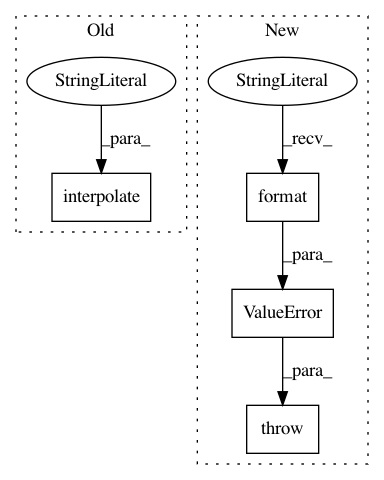

a32adb83ddeb05bef22c54489bf55e608b5be69b,sos/actions.py,,report,#Any#Any#Any#,574
Before Change
writer = output.write
elif "__report_output__" in env.sos_dict:
filename = env.sos_dict["__report_output__"].lstrip(">")
file_handle = open(interpolate(filename, "${ }"), "a")
writer = file_handle.write
elif output is None or output == "":
writer = sys.stdout.write
After Change
with fasteners.InterProcessLock("/tmp/report_lock"):
if input is not None:
if script is not None and script.strip():
raise ValueError("Please specify only one of parameter script and input: script={}, input={}".format(script, input))
if isinstance(input, str):
env.logger.debug("Loading report from {}".format(input))
with open(input) as ifile:
writer(ifile.read())
In pattern: SUPERPATTERN
Frequency: 3
Non-data size: 4
Instances
Project Name: vatlab/SoS
Commit Name: a32adb83ddeb05bef22c54489bf55e608b5be69b
Time: 2016-12-15
Author: pengwilliam1636368@gmail.com
File Name: sos/actions.py
Class Name:
Method Name: report
Project Name: vatlab/SoS
Commit Name: acab4d26b02cb0f4a1704ccfaffb7e47e4c76d0f
Time: 2016-12-15
Author: pengwilliam1636368@gmail.com
File Name: sos/actions.py
Class Name:
Method Name: report
Project Name: vatlab/SoS
Commit Name: 4c70c8ef75e46ea3bafd06f49f2797c775e38596
Time: 2016-12-15
Author: ben.bog@gmail.com
File Name: sos/actions.py
Class Name:
Method Name: pandoc